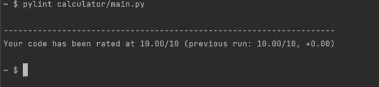

Pylint is a tool to check Python’s code errors enforcing some code standards. It looks for certain types
of errors and recommends suggestions about how particular chunks of code can be refactored. The Python
community has formalized some recommended programming styles to help everyone write code in a common,
agreed-upon style that makes the most sense for shared code. This style is captured in PEP 8, “the style
guide for Python code”. Pylint can be a quick and easy way of seeing if your code has captured the
pattern of PEP 8 standards and is user-friendly.
It displays the number of messages as it analyzes the code, and it can also be used for displaying some
statistics about the number of warnings and errors found in different files. It gives overall marks to
the code based on the number and severity of the warnings and errors.
We should have .pylintrc which is the config file for pylint.
We will make a small tutorial for one part of the calculator code to check if that passes the pylint
standards or not.
So this is our code ‘main.py’ for the calculator program. Let’s see what we get when we run through
pylint. Pylint also gives marks to your code.
Command - ‘pylint filename’. We have a main.py file in the folder named calculator.
From the above result we can see we got three error messages. First one says it’s on line 2 and the other two are on line 21. Two of them are about missing class and function docstring. So there should be a little comment underneath about what does the class ‘calculator’ and method ‘divide_number’ does. Middle one is about the method name does not follow snake_case naming style. There should be no capital letters in the method name. Let’s correct them and run it.
Let’s see what we get after running it
Hooray!! No errors and we got full marks.
Class - A class is a blueprint for the object. For example, we have a calculator class, which
takes care
of all the calculations.
class Calculator:
""" This is the Calculator class """
Object - An object (instance) is an instantiation of a class. When class is defined, only the
description for the object is defined. Therefore, no memory or storage is allocated.
In our calculator code, addition = Addition(mynumbers) ‘addition’ is called the object of ‘Addition’
class
Method - Methods are functions defined inside the body of a class. They are used to define the
behaviors
of an object. Method is defined using the keyword ‘def’. For example ‘def get_result()’ in our program
is called a method.
Instance - From class, we construct instances. An instance is a specific object created from a
particular class.
constructor - Constructors are generally used for instantiating an object. The task of
constructors is
to initialize(assign values) to the data members of the class when an object of the class is created. In
Python the __init__() method is called the constructor and is always called when an object is
created.
For example in our code we have,
def __init__(self,values: tuple):
""" constructor method"""
self.values = Calculation.convert_args_to_tuple_of_float(values)
The self - self represents the instance of the class. By using the “self” keyword we can access
the
attributes and methods of the class in python. It binds the attributes with the given arguments. Self
must be provided as a first parameter to the Instance method and constructor. Self is a convention and
not a python keyword.
The __init__ method - It is run as soon as an object of a class is instantiated. The method is
useful to
do any initialization you want to do with your object.
Class method - A class method is a method that is bound to the class and not to the object of the
class. It
can access or modify the class state. A class method receives the class as an implicit first argument,
just like an instance method receives the instance. We have used the class method in calculation.py to
generate a common method to do any calculation needed.
@classmethod
def create(cls, value_a, value_b):
"""General method made to do calculation whatever needed"""
return cls(value_a,value_b)
Static method - A static method is also a method that is bound to the class and not to the object of
the
class. It can’t access or modify the class state. Static methods are used to create utility functions.
Example for static method is shown below
@staticmethod
def divide_numbers(value_a, value_b):
""" divide two numbers and store the result"""
division = Division.create(value_a, value_b)
Calculator.add_calculation_to_history(division)
return Calculator.get_result_of_last_calculation_added_to_history()
Namespace - A namespace is a collection of currently defined symbolic names along with
information about
the object that each name references. You can think of a namespace as a dictionary in which the keys are
the object names and the values are the objects themselves. There are four types of namespaces -
built-in, global, enclosing, local. It is connected by periods and it is like folders and files in them.
In our calculator program, below shown is called namespace -
from calc.calculation import Calculation
Fixture - In testing, a fixture provides a defined, reliable and
consistent
context for the tests. We can tell pytest that a particular function is a fixture by decorating it with
@pytest.fixture. You define a function that will run each time you pass it to a test. For
example, in our code we have clear history fixture
@pytest.fixture
def clear_history_fixture():
# pylint: disable=redefined-outer-name
Calculations.clear_history()
Type hint - Type hinting is a formal solution to statically indicate the type of a value within
your Python code. You annotate the arguments and the return value.
As shown in below example, It is saying for the ‘create’ method the values are expected to be of ‘tuple’
data type.
@classmethod
def create(cls,values: tuple):
""" factory method"""
return cls(values)
Typecast - Users convert the data type of an object to required data type and this type of
conversion is called type casting.
In the last line type casting is done which is changing that list back to tuple data type.
list_values_float = []
for item in values:
list_values_float.append(float(item))
return tuple(list_values_float)